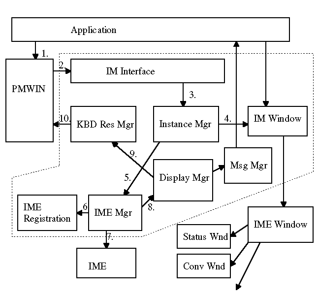
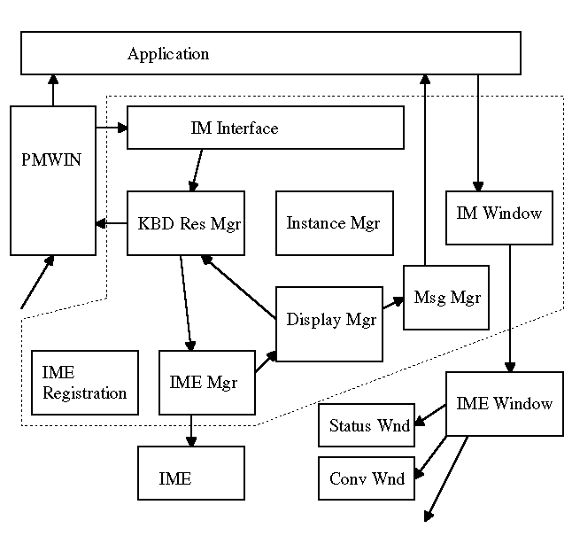
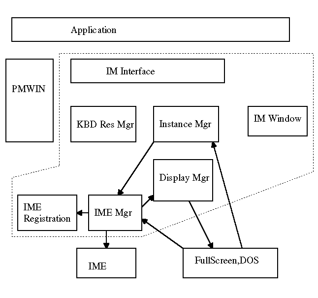
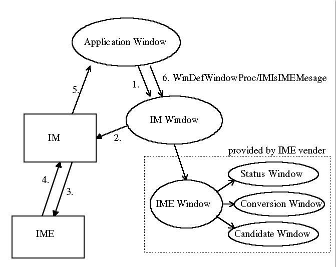
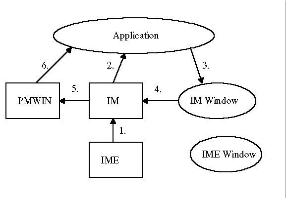
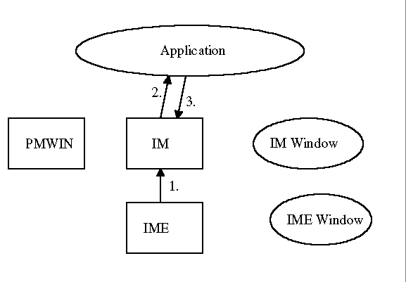

Control Flow
Control Flow of Window Creation
- WinCreateWindow
- Inform of Window Creation
- Request of Instance Creation
- Create IM Window
- Request of IME loading
- Get Current IME
- Load IME
- Setup Dispatch Address
- Request of Mode Change
Control Flow of Keyboard Event
Control Flow of FullScreen and DOS Session

General Message Flow
The root of the general message is described as blow.
- WM_IMECONTROL
- Im Api
- ImeNotifyEvent
- ImRequestEvent
- WM_IMEREQUEST
At WIN95, the application does not receive the WM_IME_NOTIFY (IMN_OPENSTATUSWINDOW)
message when the application sends the WM_IME_CONTROL (IMC_OPENSTATUSWINDOW)
to the IME window. At new IM, the application receives the WM_IMEREQUEST
(IMR_OPENSTATUSWINDOW) message when the application sends the WM_IMECONTROL
(IMC_OPENSTATUSWINDOW) to the IM window. Sample of Message Flow
- An Application sends the WM_IMECONTROL (IMC_SETCONVERSIONWINDOWPOS)
to IM Window.
- IM Window calls ImSetConversionWindowPos which
is API of IM.
- IM calls ImeNotifyEvent (IME_NE_INSTANCEUPDATED,
IME_NE_IU_CONVERSIONPOS).
- IME calls ImRequestEvent (IMR_CONVERSION, IMR_CONV_CONVERSIONPOS).
- IM generates WM_IMEREQUEST (IMR_CONVERSION, IMR_CONV_CONVERSIONPOS)
and sends it to an application window which has focus.
- The application window pass WM_IMEREQUEST (IMR_CONVERSION,
IMR_CONV_CONVERSIONPOS) to WinDefWindowProc if the application does not
handle the message.
- WinDefWindowProc sends WM_IMEREQUEST (IMR_CONVERSION,
IMR_CONV_CONVERSIONPOS) to IM window.
- IM window sends WM_IMEREQUEST (IMR_CONVERSION,
IMR_CONV_CONVERSIONPOS) to IME window.
- IME window sends WM_IMEREQUEST (IMR_CONVERSION,
IMR_CONV_CONVERSIONPOS) to conversion window.
ImIsIMEMessage
The IME unaware application may pass the IME messages to WinDefWindowProc.
The messages are forwarded to the IM window.
The IME aware application can use ImIsIMEMessage to forward the IME messages
to IM window. The application can check that the message is handled by
IM window.
Result Part Handling
Level 1 Application and Level 2 Application
- ImRequestEvent
- WM_IMEREQUEST (IMR_??)
- WinDefWindowProc
- IM Window call IM
- WinPourMessage
- WinGetMsg
Level 3 Application
- ImRequestEvent
- WM_IMEREQUEST (IMR_??)
- ImQueryResultString (Application gets result
string for IM instance)
[Back: IM Module]
[Next: Handling of Display Service]